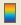
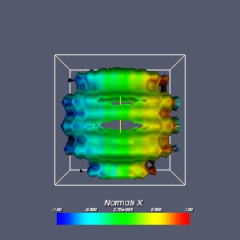
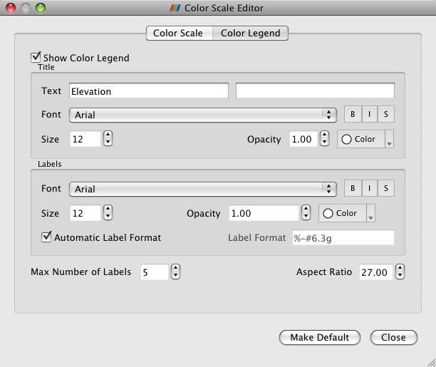
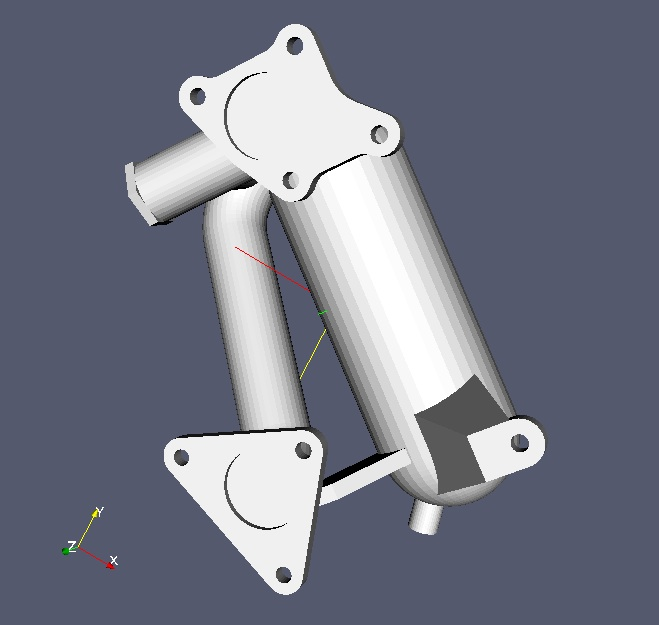
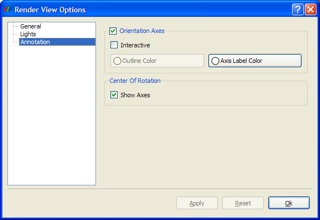
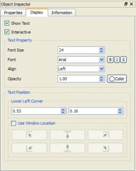
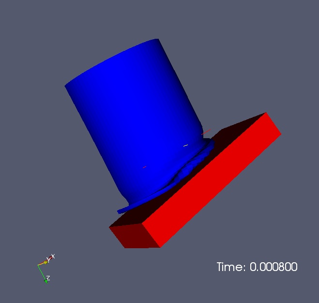
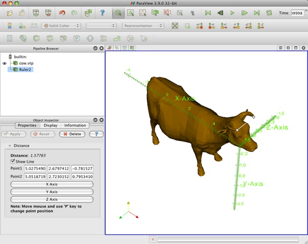
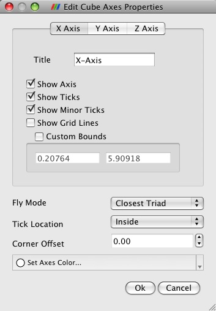

Annotation
Annotation
In ParaView, there are several ways to annotate the data to better understand or explain it. Several of the annotations can be interactively placed in the 3D scene. The parameters of the annotations are controlled using traditional user interface elements. Some types of annotation are discussed in other parts of this book. See the section on Selection for information about labeling selected points or cells in a data set.
Scalar Bar
The most straightforward way to display a scalar bar (or color legend) in the active 3D view is to use the color legend visibility button  on the Active Variables Control toolbar. When the data set selected in the Pipeline Browser is being colored by a variable (i.e., something other than Solid Color is selected in the Color by menu on the Display tab), this button is active. Clicking it toggles the visibility (in the selected 3D view) of a scalar bar showing the mapping from data values to colors for that variable.

Figure 4. Scalar Bar displaying X-component of Normals
Clicking the Edit Color Map button to the right of the Color Legend button brings up the Color Scale Editor dialog. As described in the Displaying Data chapter you have precise control over the mapping between data values and visible colors on the Color Scale tab of that dialog.
On the Color Legend tab, there are several different parameters that allow you to contol the appearance of the color legend itself. First is the Show Color Legend check box which toggles the visibility of the scalar bar (color legend) in the 3D view. This has the same effect as using the color legend visibility button. Below the Show Color Legend check button are the controls for displaying the title and labels on the scalar bar. In the Title section, the Text entry box specifies the label that appears above the scalar bar. It defaults to the name of the array used for coloring the data set. If the current data set is being colored by a vector array, the value of the second entry box defaults to specifying how the color is determined from the vector (i.e., X, Y, Z, or Magnitude). The entry box labeled Labels contains formatting text specifying the form of the scalar bar labels (numbers). The format specification used is the same as that used by the printf function in C++.

Figure 5. The color legend tab of the Color Scale Editor dialog
Below each of the Title and Labels entry boxes are controls for determining how the title and labels will be drawn in the display area. The leftmost control is a menu for choosing the font; the available fonts are Ariel (the default), Courier, and Times. Next are three formatting attribute buttons controlling whether the text is boldfaced, italicized, or shadowed, respectively. The next interface control is a spin box for controlling the text’s opacity. It ranges from 0 (transparent) to 1 (opaque).
At the bottom of this tab is a Number of Labels spin box. This determines how many scalar-value labels will be shown alongside the scalar bar. To the right of that is an "Aspect Ratio" spin box which allows you to make the scalar bar relatively thinner or thicker.
When the scalar bar is displayed in the 3D scene, it can be positioned and resized interactively, similar to interacting with 3D widgets. Clicking and dragging the scalar bar with the left mouse button repositions it in the display area. If the scalar bar begins to move beyond the left or right side of the display area, it is reoriented vertically. It is reoriented in a horizontal direction if it is moving off-screen at the top or bottom of the display area. The scalar bar can be resized by left-clicking and dragging any of its sides or corners.
Orientation Axes
When interacting with data in ParaView, it can be difficult to determine how the data set is oriented in 3D. To remedy this problem, a marker showing labeled 3D axes (i.e., orientation axes) can be displayed. The orientation of the axes matches that of the data, and the axes reorient themselves as the camera is rotated about the 3D scene.

Figure 5. 3D Orientation Axes
The user interface controls for the orientation axes are located in the Annotation section of the View Settings dialog (Edit' menu, View Settings) for the 3D view. The check box beside the Orientation Axes label toggles the visibility of the orientation axes. The Interactive check box controls whether the orientation axes can be repositioned and resized through mouse interaction, similar to interacting with 3D widgets. Left-clicking and dragging the orientation axes repositions them in the 3D view. When the orientation axes are in interactive mode, a bounding rectangle (outline) is displayed around the axes when the mouse moves over them. Left-clicking and dragging on the edges of this outline resizes the orientation axes. From the Set Outline Color button (enabled when Interactive is checked), you can change the color used for displaying the bounding rectangle. This is useful for making the outline more visible if its current color is similar to the color of the background or any object behind the outline (if the orientation axes are placed in front of a data set). The orientation axes are always drawn in front of any data set occupying the same portion of the 3D view. The Axis Label Color button allows you to change the color of the labels for the three axes. The reasons for changing the color of the axis labels are similar to those for changing the outline color.

Figure 6. User interface controls for orientation axes (in 3D view’s view settings dialog)
Center of Rotation
On the same dialog box you also have control over whether or not the center of rotation should be annotated. This annotation demarcates the location in space about which the camera rotates. ParaView uses the center of the initial data set loaded into the pipeline as the default value. You can control this placement and display of the center of rotation display via the Center Axes Control toolbar (View' menu, Toolbars, Center Axes Control'). If you need to specify an exact coordinate you may do so via the Adjust Camera dialog exposed by the righmost button on the left set of buttons above the 3D view.
Text Display
Often users want to display additional text in the 3D view (e.g., when generating a still image or an animation). In ParaView, there are a variety of ways to do this, all through the use of sources and filters. The Text source displays 2D text in the 3D scene, the 3D Text source does the same for 3D text, and the Annotate Time filter shows the current time using a text annotation in the 3D view.
Text Source
The Text source allows you display arbitrary 2D text on top of a 3D view. It is available from the Sources menu. On its Properties tab, enter whatever text you wish to be displayed in the Text entry area, and press the Apply button.
Once the text has been added to the 3D view, you can reposition it within the view by left-clicking and dragging the text. (A bounding box will be displayed around the text.) By default, the text is displayed in the lower left corner of the 3D view.
The Display tab in the Object Inspector for the Text source is different than for most other sources and filters displayed in the 3D view. Specific controls are given for positioning the text and setting various font properties.

Figure 7. Display tab for the Text source
The first check box, Show Text, toggles the visibility of the text in the 3D view. This corresponds to the eye icon in the Pipeline Browser for this source. The Interactive check box below it determines whether the text may be interactively repositioned by clicking and dragging in the 3D view.
The Text Property section of the Display tab allows you to specify various parameters relating to the font used for displaying the text. The Font Size spin box determines how large the letters in the text will be. The Font menu determines which font type will be used: Ariel, Courier, or Times. The three buttons beside this menu indicate whether the text will be drawn boldfaced, italicized, and/or using shadows. The Align menu specifies whether the text will be left-, center-, or right-aligned within its bounds box. The Opacity spin box determines how opaque the text appears. An opacity value of 0 corresponds to completely transparent text, while an opacity value of 1 means completely opaque text. The Color button beside the Opacity spin box allows you to choose a color for the text.
The Text Position of the Display tab is used for specifying exactly where in the 3D view the text appears. If Use Window Location is unchecked, then the Lower Left Corner section is active. The two spin boxes provided determine the X and Y coordinates of the lower left corner of the bounding box of the text, specified in normalized coordinates (starting from the lower left corner of the view).
If Use Window Location is checked, then the six buttons in that section of the interface become available. They allow you to choose various locations within the view for anchoring the text. Using the top row of buttons, you may place the text in the upper left corner, in the top center of the view, or in the upper right corner, respectively. The bottom row of button behaves similarly for the bottom portion of the 3D view.
3D Text Source
Whereas the Text source (described above) positions text in 2D, overlaying the 3D scene, the 3D Text source places text in the 3D scene. The text is affected by rotation, panning, and zooming as is any other object in the 3D scene.
You can control the placement of the 3D Text in two ways. First, the Display tab for all sources and filters shown in a 3D view have controls to position, translate, rotate and scale the object via textual controls. It is often easier however to use a the Transform filter for the same purpose. The transform filter allows you to drag, rotate and scale the object via either the 3D widget in the scene or via the text controls on its Properties tab.
Annotate Time
The Annotate Time source and filter are useful for labeling a time-varying data set or animation with ParaView’s current time in a 3D view. The distinction between the two is somewhat abstract. VTK's temporal support works by have the pipeline request data for a particular time. The text source displays exactly this. VTK's sources and filters are allowed to produce data at different (usually nearby producing data that changes over a step function in time) time. The annotate time filter shows the data produces by an given filter.
In either case, the annotated time value is drawn as a 2D label, similar to the output of the Text source. The Properties tab for this filter provides a single text box labeled Format. From this text box, you may specify a format string (printf style) indicating how the label will appear in the scene. As with the output of the Text source, this label may be interactively repositioned in the scene. The Display tab for this source is the same as the one for the Text source; it is described earlier in this section.

Figure 8. Using the Annotate Time filter to display the current time in a time-varying data set
Other sources as Annotations
Most of the other items in the Sources menu can also be used for annotation of the 3D scene. Placement of these is similar to placement of the 3D Text source. In particular the 2D Glyph, Ruler and Outline sources are frequently used for annotation.
The ruler as the name applies allows for some quantitative measurement of the data. The ruler produces a Line widget in the 3D scene. It is most effective to use the 'P' key to place the two ends of the line in the 3D scene in turn. When placed the Properties tab for the ruler lists the length of the line you've placed in space. In Figure 9 A ruler is being used to measure the distance between the cows horns.
Cube Axes
Finally in the Annotation area of the Display tab of any object shown in a 3D view you can toggle the display of a Cube Axes Display. Like the ruler source, the cube axes allows you to inspect to world space extent of objects in the scene. When this display is enabled, a gridded, labelled bounding box is drawn around the object that lets you quickly determine the world space extent in each dimension of the object.

Figure 9. Cube Axes and Rulers used to measure a cow and its horns.
Pressing the Edit button next to the enable checkbox brings up a dialog that lets you customize the presentation of the axes display. You have one tab on this dialog for each of the three axes. Use the Title entry to specify a label. Use the Show Axes checkbox to enable or disable the given axes. Show Ticks and Show Minor Ticks let you customize the division markers along the axis. Show Grid Lines extends the major tick marks so that they completely surround the object. The Custom Bounds entry allows you to specify your own extent for that axis label.
At the bottom of the dialog box are controls over all three axes. The Fly Mode dropdown controls the way the axes are drawn on different axes dependent on the camera orientation. Outer Edges draws opposing edges so as to space the annotation as widely as possible. Closest Triad and Furthest Triad draw the nearest and furthest corners respectively. The two static options lock the choice of edges to draw so that they do now change as the camera moves. Tick Location draws the tick marks inward toward the center of the object, outward away from the center, or in both directions simultaneously. Corner Offset puts some space between the actual bounds and the displayed axes, which is again useful for minimizing visual clutter. Finally you have control over the color of the axes through the Set Axes Color... popup color selector.

Figure 10. Edit Cube Axes Dialog